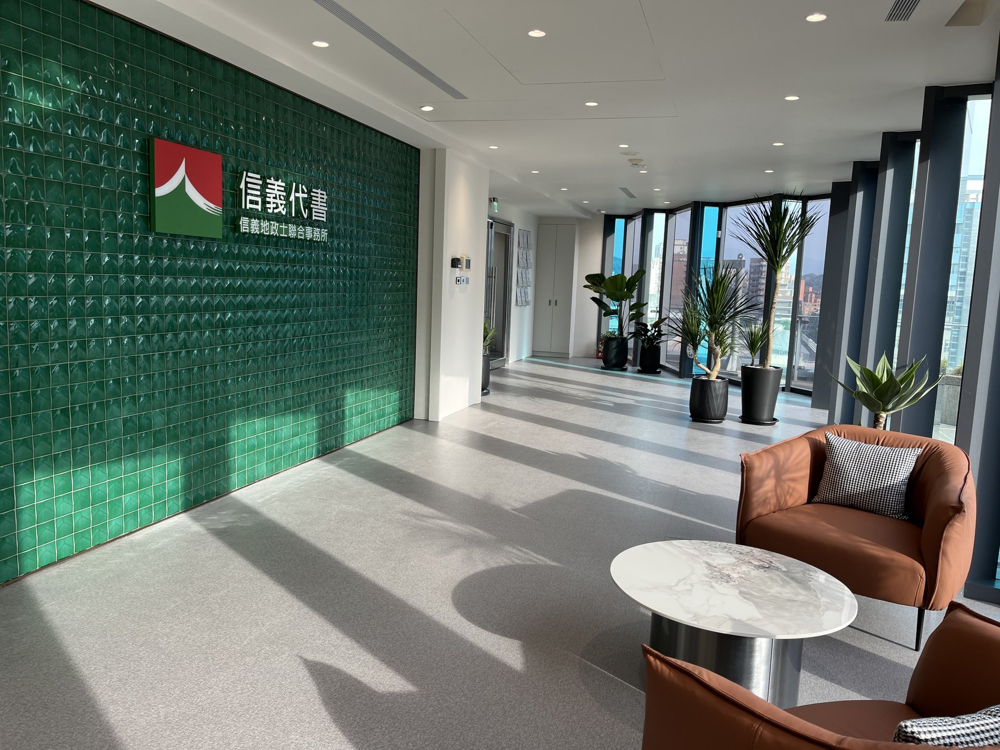

從抵達到簽署
客戶走進簽約中心，需要知道往哪裡走、在哪裡等候，以及何時能在私密的空間裡談交易。從品牌牆、等候座位到簽約室門牌，每一段動線都對應一個具體的服務需求。
Howard 負責服務動線、空間規格及跨據點整合，與代書使用單位、空間設計、工程及設備團隊協作。

沿著服務動線看現場
從空間規劃到工程
內湖案以迎賓、自由洽談、休憩、簽約、辦公與金庫收納分區，並將家具、照明、材料及空間識別納入規格。跨據點整合沿用共同的服務原則，各案再依場址格局和工程條件調整。
客戶走進簽約中心，需要知道往哪裡走、在哪裡等候，以及何時能在私密的空間裡談交易。從品牌牆、等候座位到簽約室門牌，每一段動線都對應一個具體的服務需求。
Howard 負責服務動線、空間規格及跨據點整合，與代書使用單位、空間設計、工程及設備團隊協作。

內湖案以迎賓、自由洽談、休憩、簽約、辦公與金庫收納分區，並將家具、照明、材料及空間識別納入規格。跨據點整合沿用共同的服務原則，各案再依場址格局和工程條件調整。